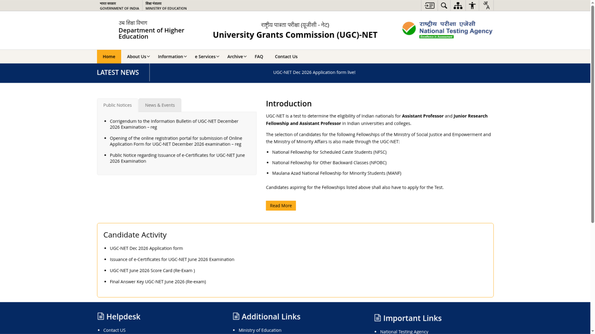
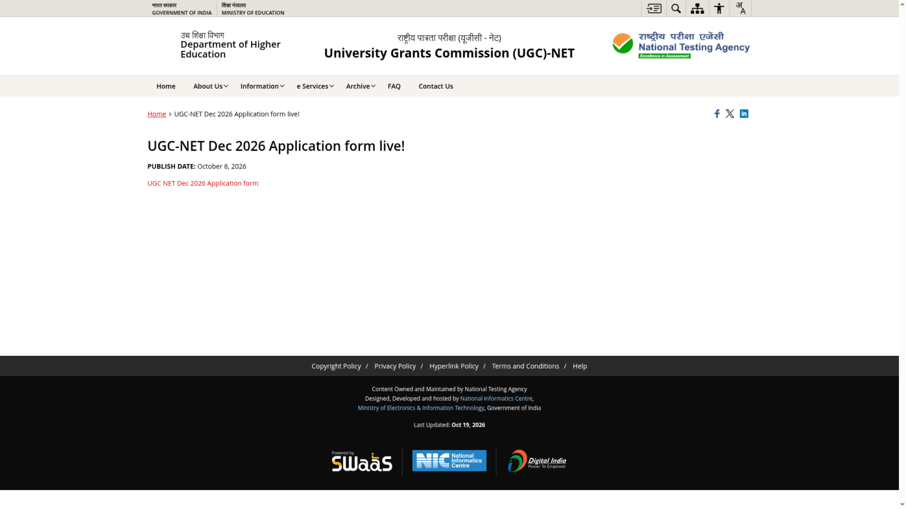

UGC NET December 2026: apply by 31 October, exam from 14 December
Online applications for UGC-NET December 2026 close on Saturday, 31 October 2026, at 11:50 PM on the National Testing Agency's portal, ugcnet.nta.nic.in. The exam decides eligibility for Junior Research Fellowship (JRF), Assistant Professor posts and PhD admission, and is also the route used for the NFSC, NFOBC and Maulana Azad national fellowships. The computer-based test covers 87 subjects and runs on 14-18 December 2026 and 21 December 2026. NTA's public notice of 27 October 2026 extended the last date from 28 October to 31 October, without late fee; the earlier late-fee window no longer applies.
Key dates from the official bulletin
Update, 28 October 2026: NTA has extended the last date to 31 October 2026, 11:50 PM, without late fee. See our extension update. The list below shows the extended deadline; the other dates are from the 16 October bulletin.
- Application window: 8 October 2026 to Saturday, 31 October 2026, up to 11:50 PM (extended from 28 October by NTA's public notice of 27 October 2026).
- Last date to pay the fee: 31 October 2026, 11:50 PM.
- Late fee: none. The extension notice says it is without late fee, so the earlier Rs 500 late-fee window (29 to 31 October) is replaced.
- Correction window: 2 November to 4 November 2026, online only.
- Exam city intimation: Monday, 23 November 2026.
- Admit card download: Monday, 7 December 2026.
- Exam dates: Monday, 14 December to Friday, 18 December 2026, and Monday, 21 December 2026 - six days in CBT mode.
These dates are from the updated Information Bulletin published on 16 October 2026, which changed the exam schedule from the originally announced 14-19 December. The bulletin is the deciding source; re-check it if you read this later.
Who can apply
- Master's degree with at least 55% marks (without rounding off) for General and General-EWS candidates, from a UGC-recognised university.
- At least 50% marks (without rounding off) for OBC-NCL, SC, ST, PwD, PwBD and Third Gender candidates.
- Final-year Master's students and those awaiting results can apply provisionally, but must complete the degree within two years of the NET result for JRF or Assistant Professor eligibility, or within one year for PhD-admission-only eligibility.
- Four-year (8-semester) bachelor's degree holders with at least 75% aggregate (5% relaxation for reserved categories) can apply for JRF and PhD admission only - this route does not make you eligible for Assistant Professor.
Age limits
For JRF, the limit is 30 years as on 1 December 2026. Relaxations of up to five years apply for OBC-NCL, SC, ST, PwD, PwBD and Third Gender candidates and for women, plus limited relaxation for research experience; total relaxation cannot exceed five years. There is no upper age limit for Assistant Professor or for PhD admission only.
Exam pattern
The test has two parts in one three-hour sitting with no break. Paper I has 50 compulsory multiple-choice questions (100 marks) on teaching and research aptitude; Paper II has 100 compulsory questions (200 marks) on your chosen subject. Each question carries 2 marks and there is no negative marking. The medium is English and Hindi only, except for language papers.
Application fee
Rs 1,150 for General and unreserved candidates; Rs 600 for General-EWS and OBC-NCL; Rs 325 for SC, ST, Third Gender and PwD/PwBD candidates. Payment is online only - credit card, debit card, net banking or UPI. The late window adds Rs 500. Applicable bank or payment-gateway processing charges and GST are extra.
How to apply
- Open ugcnet.nta.nic.in and use the UGC-NET Dec 2026 application form link under Candidate Activity.
- Register, fill the form and choose your subject and exam cities carefully - some choices cannot be changed later.
- Upload your photo and signature exactly as the bulletin specifies.
- Pay the fee online before 11:50 PM on 31 October 2026.
- Download and keep the confirmation page after successful payment; an unpaid or half-finished form is not a submitted application.
- Use the 2-4 November correction window only for genuine mistakes.
Find the current application link
These screenshots show the official portal and its application-link page, checked on 24 October 2026. The national emblem is masked. They show where to start, not a completed registration or payment.


Mistakes to avoid
Submit only one application - NTA says only one application is to be submitted per candidate. Use your own or your parent's mobile number and email, since OTPs and all later communication go there. Do not assume the older 14-19 December schedule; the updated bulletin moved the exam to 14-18 and 21 December. And remember the fee step: the form counts only after the payment succeeds by 11:50 PM on 31 October.
Frequently asked questions
Is there an age limit for Assistant Professor eligibility?
No. The 30-year limit applies only to JRF.
Can final-year Master's students apply?
Yes, provisionally. The degree must be completed within the bulletin's stated period for the eligibility to count.
Is there negative marking?
No. Each correct answer gets 2 marks; wrong answers lose nothing.
Sources: UGC-NET official portal · NTA public notice, 8 October 2026 · UGC-NET December 2026 Information Bulletin (updated 16 October 2026) · Application form live page. Checked 24 October 2026. Explainer by AiCoN - not a government publication. Details can change; check ugcnet.nta.nic.in before you apply.